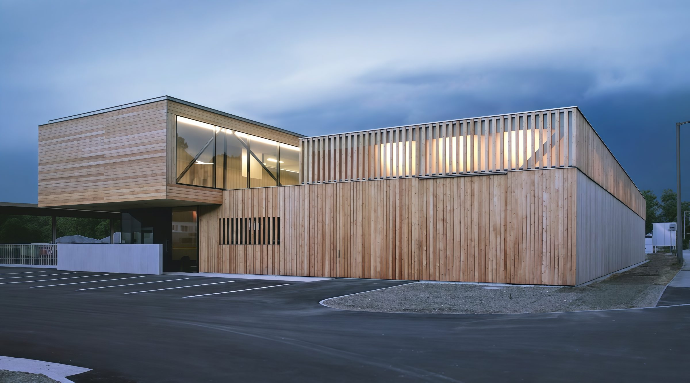
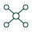
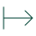
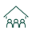
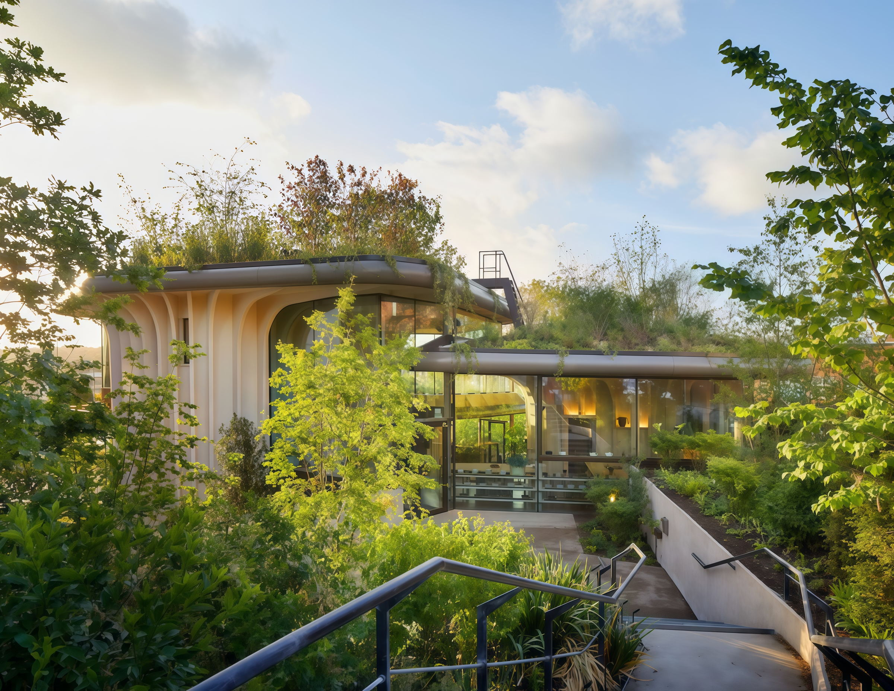
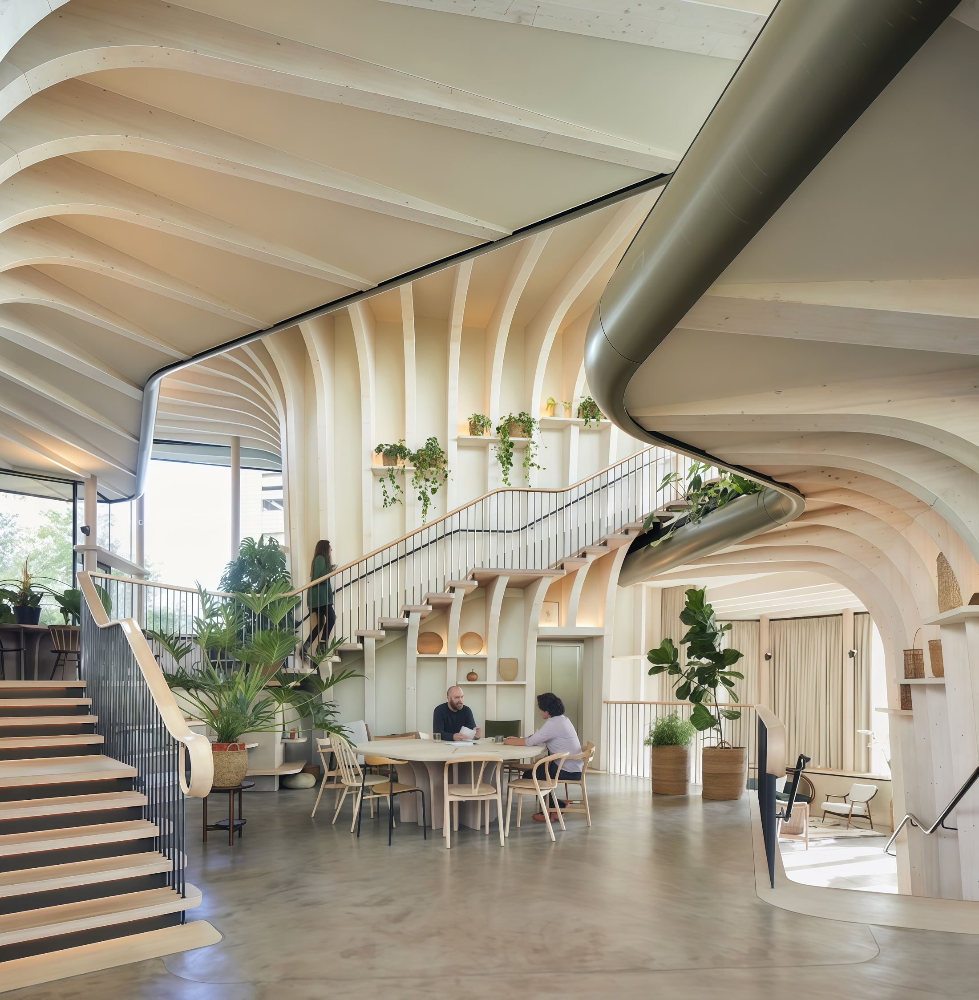

Sustainable construction is happening — we help it happen faster
Connecting people, technologies, and institutions, we create ecosystems that advance sustainable development and shape a future that works for everyone. Backed by two decades of partnerships across the global timber industry, we act as a bridge between expertise, resources, and opportunities.
About the IM HOLZ Model
The Shift
From timber trade to integrated timber infrastructure
Wood has always been at the core of what we do — a renewable material that connects the built environment with nature. What has changed is our role around it. After two decades of trading timber across international markets, we have moved beyond supplying material to understanding what it can enable — and how that knowledge can become part of something larger.
We bridge international partners, proven Austrian technologies, local expertise and institutions, bringing nature, material knowledge and technology into one system and shortening the distance between intent and construction.
The ambition is no longer to supply wood, but to use what we know about the material to help create better infrastructure — resource-efficient, adaptable and designed to work with nature.
Project Types
Where the ecosystem applies
From schools to airports, infrastructure serves very different purposes. The technologies behind it can be part of the same ecosystem.
We bring together materials, engineering and proven technologies for educational environment, healthcare facilities, transport hubs, airports, public spaces and private buildings — adapting their combination to the needs of each project.
-
Kindergarten Hallwang, Salzburg (2022) — an unrelated project, shown for illustration. Schools & Universities
-
Centre de santé Madeleine Brès, Taverny (2020) — an unrelated project, shown for illustration. Healthcare
-
Wohnquartier Schildacker, Freiburg im Breisgau (2021) — an unrelated project, shown for illustration. Civic & Public Buildings
-
Aparthotel Quartier, Garmisch-Partenkirchen (2017) — an unrelated project, shown for illustration. Hospitality
For Whom
A ministry, an investor and a producer arrive at the same table with different questions
-
National targets
Meet national sustainability targets with construction standards that are already proven in practice rather than still pending.
-
International financing
Unlock access to international climate and infrastructure financing, with the technical case documented from the start.
-
A place to look first
Delegations and ministries can explore leading Austrian solutions without specialist knowledge, and leave with something applicable at home.
-
Traceable procurement
Documented supply chains, so that when the funding is public every component can be traced back to its source.
-
Durable assets
Sustainable assets built to standards the market is only beginning to require, on a material with a long service life.
-
Emerging standards
Requirements that are voluntary today become mandatory on a schedule; building to them now is the cheaper order of events.
-

One conversation
Technology providers, engineering, finance and public partners are reached through a single point rather than assembled one by one.
-
A supply base already built
More than twenty years of partnerships across international timber markets stand behind the delivery side.
-

Market access
Enter new markets through partners who already work inside their regulatory and procurement systems.
-
Partner sourcing
Support finding the right technology and delivery partners for a given brief, rather than a catalogue to search alone.
-
An open showcase
The partnership model is open at this stage — not tied to a single vendor — so a broad range of Austrian producers is represented.
-
A stage in Vienna
The Hub is conceived as a venue where solutions are shown to visiting delegations, ministries and investors.
Ecosystem
Where the ecosystem comes together
Sustainable infrastructure is not created by one player alone. It emerges when institutions, technology, industry, finance, local expertise and end users work towards the same goal. IM HOLZ Nuova acts as a bridge between them — bringing different perspectives into one process and helping turn shared ambition into projects that can be implemented.
-
01
Government & Municipalities
Policy alignment, permitting support, and national mandates.
-
02
Technology Providers
Advanced timber systems and hybrid construction solutions.
-
03
International Organizations
Global ESG standards, transparency, and climate frameworks.
-
04
Engineering & Design
Master planning, architecture, and technical supervision.
-
05
Finance Institutions
Secure green funding and risk mitigation.
-
06

Communities & End Users
Resilient, healthy, sustainable living spaces.
The connective centre
IM HOLZ Nova
Sustainable Infrastructure Solutions Integrator
Announcement
A House of Austrian Technologies for Vienna is taking shape
We are developing the concept for a demonstration centre in Vienna exploring Austrian approaches to sustainable development. Conceived as both a working space and a living showcase, it will bring together materials, technologies and expertise across sectors — demonstrating how proven solutions can work together in real-world environments.
The project is currently at an early stage, with its scope, partnerships and funding model being defined. Our ambition is to create more than a showroom: a place where technologies can be experienced in context, ideas can be tested and new collaborations can take shape — in Vienna and beyond.
Explore the online version
-
01
Prefabricated envelope
Facade elements assembled dry and delivered to a fixed sequence.
-
02
Planted roof build-up
The roof carries its planting on the timber deck itself.
-
03
Hybrid cores
Concrete kept to where it earns its place: cores, stairs, foundations.

-
04
Cross-laminated timber
Panels and glulam frames as the primary load-bearing structure.
-
05
Exposed structure
What carries the load is also the finished surface: nothing is clad over it.
-
06
Dry connections
Members bolted rather than cast in, so the frame can come apart again.
Contact
Tell us about your project — we’ll come back with the right partners and a first outline